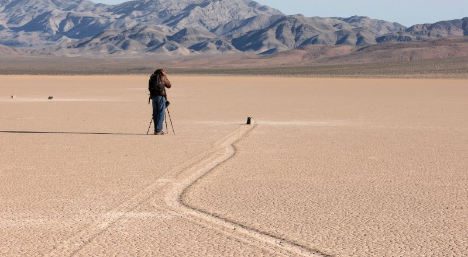

Движущиеся камни
Движущиеся камни (англ. Sailing stones), также называются скользящие, или ползущие камни — геологический феномен, обнаруженный на высохшем озере Рейстрэк-Плайя в Долине Смерти в США. Камни медленно двигаются по глинистому дну озера, о чём свидетельствуют длинные следы, остающиеся за ними. Камни передвигаются самостоятельно без помощи живых существ, однако до Рождества 2013 года никто никогда не видел и не фиксировал перемещение на камеру. Подобные движения камней были отмечены в нескольких других местах, однако по числу и длине следов Рейстрэк-Плайя сильно выделяется среди остальных.
Содержание
Описание
Большинство из скользящих камней попадают на дно высохшего озера с доломитового холма высотой 260 м, расположенного на южной конечности Рейстрэк-Плайя. Масса камней доходит до нескольких сотен килограммов. Следы, тянущиеся за ними, имеют длину несколько десятков метров, ширину от 8 до 30 см и глубину менее 2,5 см.
Камни приходят в движение всего один раз за два или три года, причём большая часть следов сохраняется 3–4 года. Камни с ребристой нижней поверхностью оставляют более прямые следы, а камни, лежащие на плоской стороне, блуждают из стороны в сторону. Иногда камни переворачиваются, что отражается на размере их следа.
История исследования
До начала XX века явление объяснялось сверхъестественными силами, затем в период становления электромагнетизма возникло предположение о воздействии магнитных полей, которое ничего не объясняло.
В 1948 году геологи Джим Макалистер и Аллен Агню нанесли на карту расположение камней и отметили их следы. Немного позже сотрудники Службы национальных парков США составили детальное описание места и журнал Life опубликовал фотографии с Рейстрэк-Плайя, после чего начались попытки объяснения движения камней. Большинство гипотез сходилось на том, что ветер при влажной поверхности дна озера по крайней мере отчасти объясняет феномен. В 1955 году геолог Джордж Стэнли из университета Мичигана опубликовал статью, в которой утверждал, что камни слишком тяжелы, и местный ветер не в состоянии их передвинуть. Он и его соавтор предложили теорию, согласно которой в ходе сезонного затопления высохшего озера на воде образуется ледяная корка, способствующая движению камней.
Исследования Шарпа и Кэри
В мае 1972 года Роберт Шарп (англ. Robert Sharp, Калифорнийский технологический институт) и Дуайт Кэри (англ. Dwight Carey, Калифорнийский университет в Лос-Анджелесе) начали программу слежения за перемещениями камней. Тридцать камней с относительно свежими следами были помечены, а их начальное положение указано колышками. За 7 лет исследований учёные выработали теорию, по которой вода, скапливающаяся в дождливый сезон в южной части озера, разносится ветром по дну высохшего озера и смачивает его поверхность. В результате твёрдая глинистая почва сильно размокает и коэффициент трения резко снижается, что позволяет ветру сдвинуть с места даже один из самых крупных камней (его назвали Karen) массой около 350 кг.
Также были проверены гипотезы перемещения с помощью льда. Вода, движимая ветром, по ночам может покрываться ледяной коркой, в которую вмерзают расположенные на пути воды камни. Лёд вокруг камня мог увеличивать сечение взаимодействия с ветром и помогать перемещать камни вдоль потоков воды. В качестве эксперимента вокруг камня шириной 7,5 см и массой 0,5 кг был создан загон диаметром 1,7 м с расстоянием между опорами забора от 64 до 76 см. Если вокруг камней образовывался слой льда, то при движении он мог зацепиться за опору забора и замедлить движение или изменить траекторию, что отразилось бы на следе камня. Однако подобных эффектов не наблюдалось — в первую зиму камень прошёл рядом с опорой забора, переместившись на северо-запад за огороженную территорию на 8,5 м. В следующий раз внутрь загона положили два камня потяжелее — один из них через пять лет переместился в том же направлении, что и первый, однако второй за период исследований не сдвинулся с места. Это говорило о том, что ледяная корка влияет на движение камней, только если она мала.
Десять из помеченных камней сдвинулись в первую зиму исследований, причём камень A (который называли Mary Ann) прополз 64,5 м. Было отмечено, что многие камни также передвигались в следующие два зимних периода, а летом и в иные зимы стояли на месте. Спустя 7 лет всего два из 30 наблюдаемых камней не поменяли своего местоположения. Самый маленький из камней (Nancy) был 6,5 см в диаметре, причём он переместился на максимальное суммарное расстояние — 262 м, а затем всего за одну зиму — на 201 м. Наиболее массивный камень, перемещение которого было зафиксировано, весил 36 кг.
Дальнейшие исследования
В 1993 году Пола Мессина (Paula Messina, Университет штата Калифорния в Сан-Хосе) защитила диссертацию на тему движущихся камней, в которой было показано, что в целом камни не двигались параллельно. По мнению исследователя, это подтверждает то, что лёд никак не способствует движению. После изучения изменений координат 162 камней (которые проводились с помощью GPS), было определено, что на перемещение валунов не влияют ни их размер, ни их форма. Оказалось, что характер движения в большой степени определяется положением валуна на Рейстрэк-Плайя. Согласно созданной модели, ветер над озером ведёт себя очень сложным образом, в центре озера даже образуя вихрь.
В 1995 году группа под руководством профессора Джона Рейда отметила высокую похожесть следов зимы 1992–1993 года со следами конца 1980-х. Было показано, что по крайней мере некоторые камни двигались с потоками покрытой льдом воды, причём ширина ледяной корки была около 800 м, о чём свидетельствовали характерные следы, процарапанные тонким слоем льда. Также было определено, что граничный слой, в котором ветер замедляется из-за контакта с землёй, на таких поверхностях может быть всего 5 см, что означает возможность воздействия ветров (скорость которых зимой доходит до 145 км/ч) даже на совсем невысокие камни.
В 2014 году в PLOS была опубликована работа, авторы которой описывают механизм движения камней. Учёные поместили несколько своих камней массой 5–15 кг на дно высохшего озера, снабдив их навигационными датчиками и окружив фотокамерами. Причиной движения стали обширные (десятки метров), но при этом тонкие (3–6 мм) пластины льда, образующиеся после замерзания собравшейся в озере воды в предшествующие морозные ночи. Этот плавающий лёд, увлекаемый ветром и подлёдным течением, перемещал камни со скоростью 2–5 м/мин.